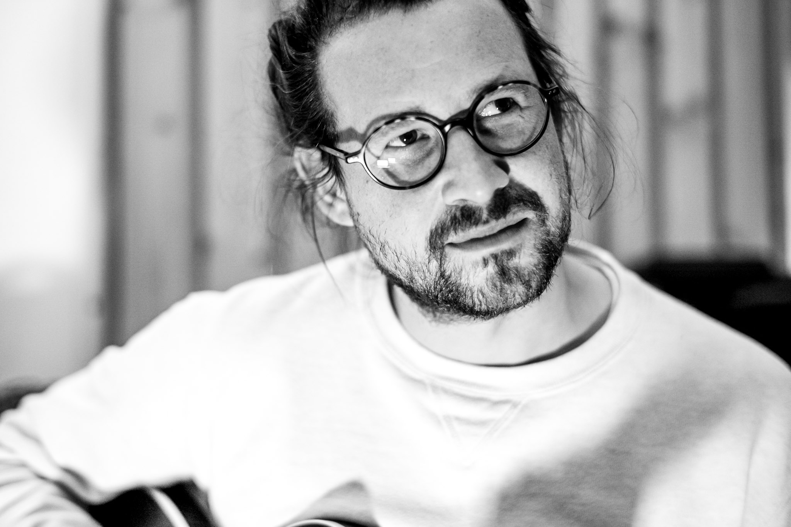

Andreas Völk ist ein in Berlin lebender Musiker und Künstler. Er studierte am
Institut für Musik der Hochschule Osnabrück Jazzgitarre. Seine künstlerischen Arbeiten
beschäftigen sich mit improvisierter, experimenteller Musik und Videokunst. Sein Gitarrenspiel
zeichnet sich durch das ungewöhnliche Benutzen von Effektgeräten mit tiefem emotionalem
Ausdruck und der unermüdliche Suche nach dem „neuen“ Klang aus.
Im weiteren Verlauf der Website findet Ihr allerlei schnelle Informationen zu den Projekten und direkte Links zu diesen.
